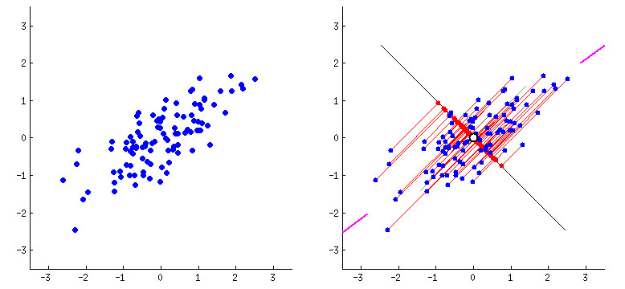
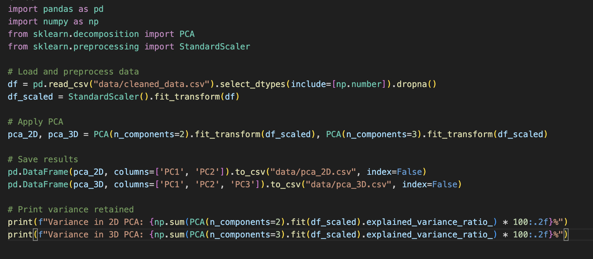
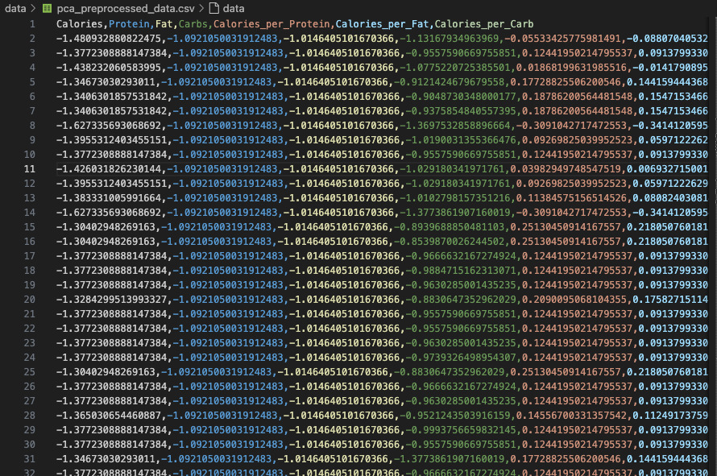
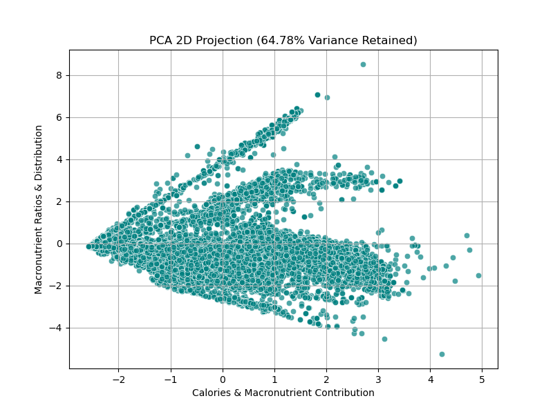
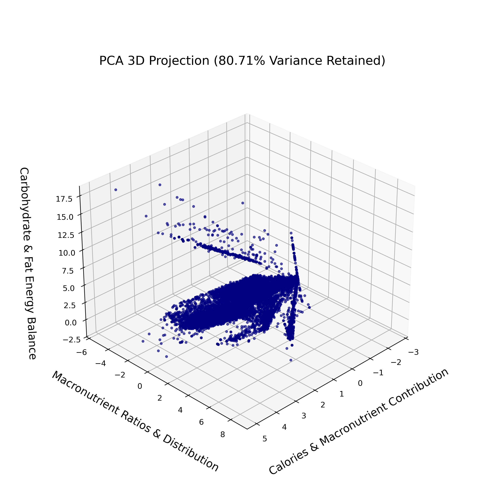

Principal Component Analysis (PCA) is a dimensionality reduction technique that helps simplify complex datasets while retaining most of the meaningful variance. For our project, we applied PCA to uncover the key nutritional patterns and reduce redundancy among food attributes.

Data preprocessing is a crucial step in our analysis, ensuring that raw food data is clean, structured, and ready for meaningful insights. Before applying PCA, we refined the dataset by handling missing values, standardizing numerical features, and selecting the most relevant attributes.
The cleaned dataset serves as the foundation for our study, capturing essential nutritional details while eliminating inconsistencies. By refining this data, we enhance the accuracy of our machine learning models and ensure reliable pattern recognition in food classification.
Our preprocessing pipeline prepares the data for Principal Component Analysis (PCA), a technique that reduces dimensionality while preserving key nutritional patterns. This process allows us to uncover hidden relationships, simplify analysis, and enhance visualization without losing critical information.
Explore the cleaned dataset below to see how we structured our data before diving into PCA.

View Cleaned Data
Once the cleaned dataset was prepared, we further processed it specifically for Principal Component Analysis (PCA). This involved standardizing numerical features, normalizing data distributions, and selecting relevant variables to optimize dimensionality reduction.
This code efficiently prepares our dataset for Principal Component Analysis (PCA). It begins by loading and cleaning the data, ensuring that only numerical features are used. Standardization is then applied to scale all values, making PCA more effective.
The script extracts the most important patterns in the data by reducing its dimensionality to both 2D and 3D representations. The transformed datasets are then saved for further analysis, while the explained variance is computed to measure how much of the original information is retained.
Here’s a snippet of the code we used to preprocess our data for PCA.

View Preprocessing Script
The PCA-preprocessed dataset is now structured for efficient analysis, ensuring that key patterns are preserved while minimizing redundancy. This transformation enhances the performance of machine learning models and simplifies complex relationships in the data.
Explore the final preprocessed dataset below, which is now ready for PCA.

Our 2D PCA projection retained 64.78% of the variance, allowing us to visualize how different food products cluster based on macronutrient contributions. The 3D PCA projection captured 80.71% of the total variance, providing an even deeper insight into the relationships between calories, protein, fats, and carbohydrates.

The 2D visualization provides a clearer separation of different food categories, where principal components (PC1 and PC2) highlight key variations in macronutrient ratios and energy contributions.

The 3D PCA projection incorporates an additional principal component, revealing deeper relationships between food items. This visualization helped us retain more variance while reducing dimensions, making complex food patterns easier to analyze.
Additionally, we determined that at least 6 principal components are needed to retain 95% of the total variance. This insight guided us in selecting the optimal number of features for further analysis.